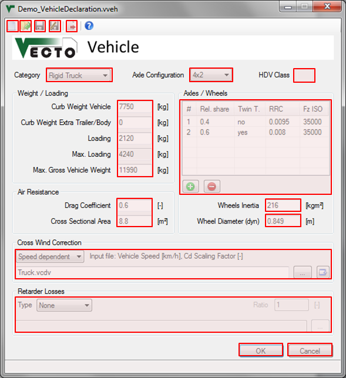

Description
The Vehicle File (.vveh) defines the main vehicle/chassis parameters like axles including RRCs, air resistance and weight.
Relatve File Paths
It is recommended to define relative filepaths. This way the Job File and all input files can be moved without having to update the paths.
Example: "Demo\RT1.vrlm" points to the "Demo" subdirectory of the Vehicle File's directoy.
VECTO automatically uses relative paths if the input file (e.g. Retarder Losses File) is in the same directory as the Vehicle File. (The Vehicle File must be saved before browsing for input files.)
General vehicle parameters
Vehicle Category
Axle Configuration
Gross Vehicle Mass Rating [t]
HDV Class
Weight/Loading
These fields define the weight and loading of the vehicle. Max. Loading displayes the maximum possible loading for the selected vehicle depending on curb weight and GVW values.
Note: VECTO uses the sum of Curb Weight Vehicle, Curb Weight Extra Trailer/Body and Loading for calculation!
Air Resistance
The product of Drag Coefficient [-] and Cross Sectional Area [m2] (cd x A) and Air Density [kg/m3] (see Settings) together with the vehicle speed defines the Air Resistance. Note that the Drag Coefficient may be altered when using Cross Wind Correction.
Axles/Wheels
For each axle the parameters Relative axle load, RRCISO and FzISO have to be defined in order to calculate the total Rolling Resistance Coefficient.
Furthermore the Wheels Inertia [kgm²] has to be set per wheel for each axle. In Declaration Mode the inertia is defined automatically according to the selected tyres.
Use the and
and  buttons to add or
remove axles form the vehicle. Doubleclick entries to edit existing
axle configurations.
buttons to add or
remove axles form the vehicle. Doubleclick entries to edit existing
axle configurations.
Dynamic Tyre Radius [mm]
Powered axle tyres/rims
Retarder Losses
If available a Retarder Torque Loss Map can be defined here to consider idling losses caused by the retarder.
Note: Do not use this function if the retarder's losses are already included in the Transmission Loss Maps!
Three options are available:
Cross Wind Correction
Four different options are available:
Controls
 New
file
New
file
 Open
existing file
Open
existing file
 Save
current file
Save
current file
 Save
file as...
Save
file as...
 Send
current file to the VECTO
Editor
Send
current file to the VECTO
Editor
 Save
and close file
Save
and close file
 Cancel without saving
Cancel without saving
The Vehicle File (.vveh) defines the main vehicle/chassis parameters like axles including RRCs, air resistance and weight.
Relatve File Paths
It is recommended to define relative filepaths. This way the Job File and all input files can be moved without having to update the paths.
Example: "Demo\RT1.vrlm" points to the "Demo" subdirectory of the Vehicle File's directoy.
VECTO automatically uses relative paths if the input file (e.g. Retarder Losses File) is in the same directory as the Vehicle File. (The Vehicle File must be saved before browsing for input files.)
General vehicle parameters
Vehicle Category
Axle Configuration
Gross Vehicle Mass Rating [t]
Needed for Declaration Mode to identify the HDV Class.
HDV Class
Displays the
automatically selected HDV Class depending on the settings above.
Weight/Loading
These fields define the weight and loading of the vehicle. Max. Loading displayes the maximum possible loading for the selected vehicle depending on curb weight and GVW values.
Note: VECTO uses the sum of Curb Weight Vehicle, Curb Weight Extra Trailer/Body and Loading for calculation!
Air Resistance
The product of Drag Coefficient [-] and Cross Sectional Area [m2] (cd x A) and Air Density [kg/m3] (see Settings) together with the vehicle speed defines the Air Resistance. Note that the Drag Coefficient may be altered when using Cross Wind Correction.
Axles/Wheels
For each axle the parameters Relative axle load, RRCISO and FzISO have to be defined in order to calculate the total Rolling Resistance Coefficient.
Furthermore the Wheels Inertia [kgm²] has to be set per wheel for each axle. In Declaration Mode the inertia is defined automatically according to the selected tyres.
Use the
Dynamic Tyre Radius [mm]
Effective (dynamic) wheel radius used to calculate engine speed. In Declaration Mode the radius calculated automatically using tyres/rims of the powered axle.
Powered axle tyres/rims
Needed for Declaration Mode to calculate the dynamic tyre radius.
Retarder Losses
If available a Retarder Torque Loss Map can be defined here to consider idling losses caused by the retarder.
Note: Do not use this function if the retarder's losses are already included in the Transmission Loss Maps!
Three options are available:
- Included in Transmission Loss Maps: Use this if the Transmission Loss Maps already include retarder losses.
- Primary Retarder (before gearbox): The rpm ratio is relative to the engine speed
- Secondary Retarder (after gearbox): The rpm ratio is relative to the cardan shaft speed
Cross Wind Correction
Four different options are available:
- No Correction
- Speed dependent (User-defined)
- Speed dependent (Declaration Mode)
- Vair & Beta Input
Controls
Create a new empty .vveh
file
Open an existing .vveh
file
Note: If the current
file was opened via the VECTO
Editor the file will be sent automatically when saved.
Save
and close fileIf necessary the file path
in the VECTO Editor
will be updated.
Cancel without saving